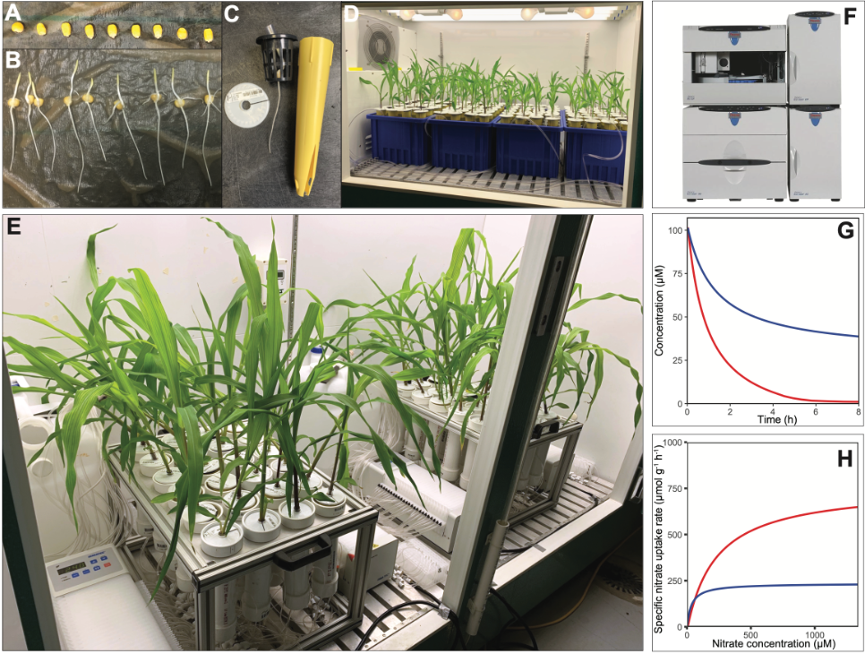
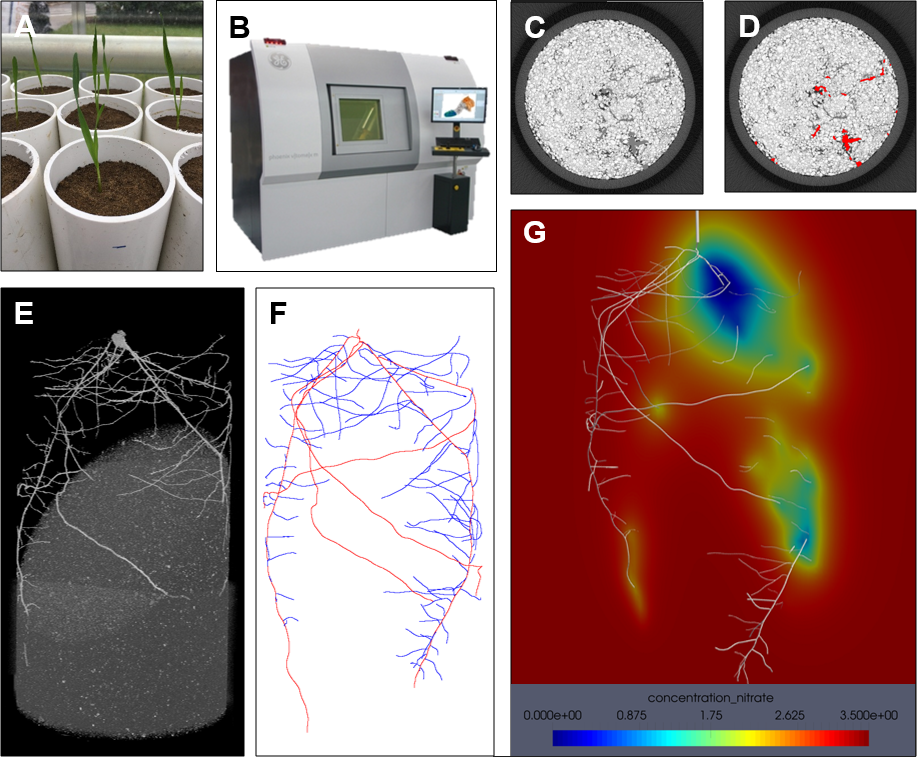
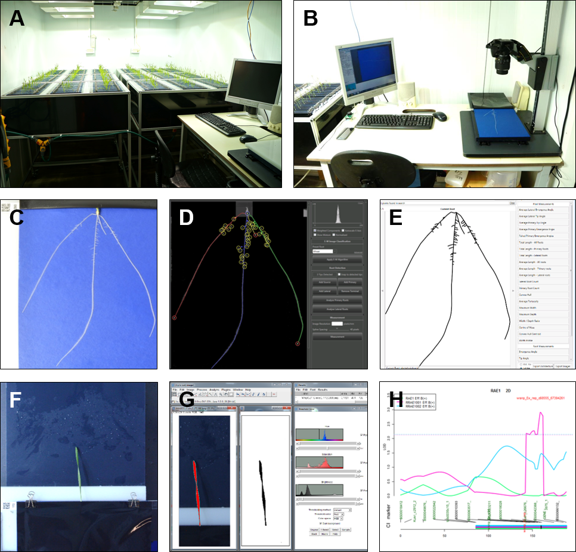
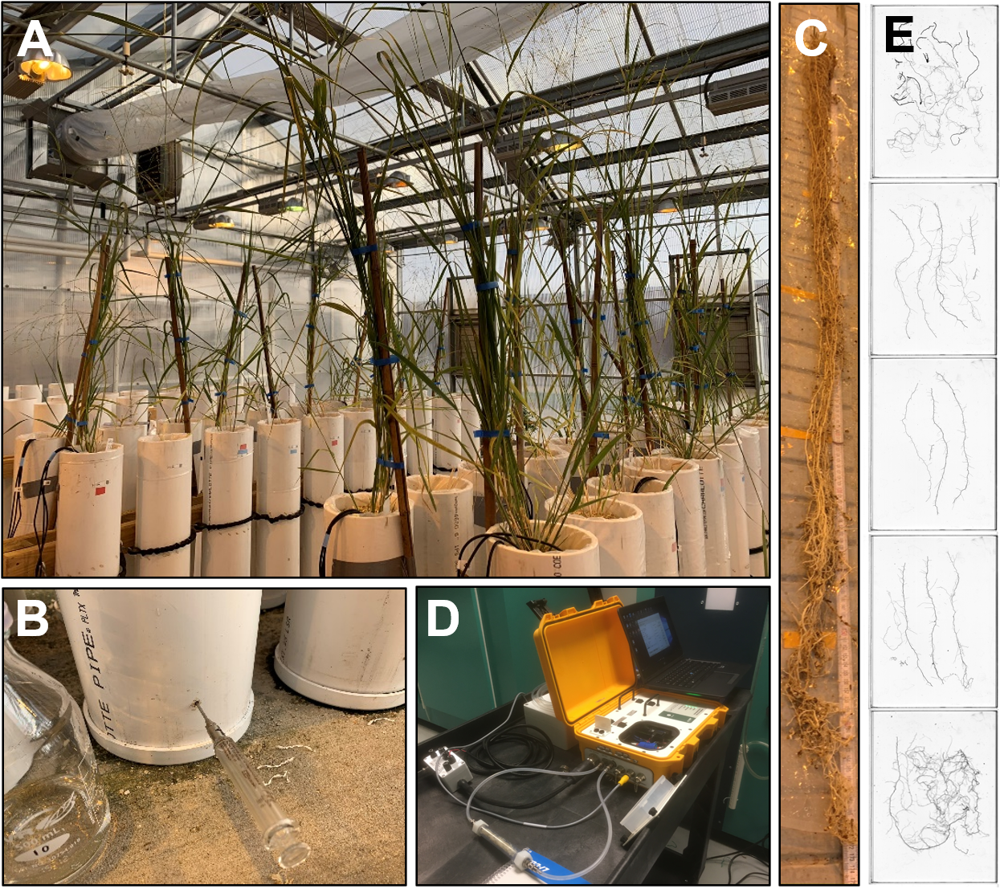
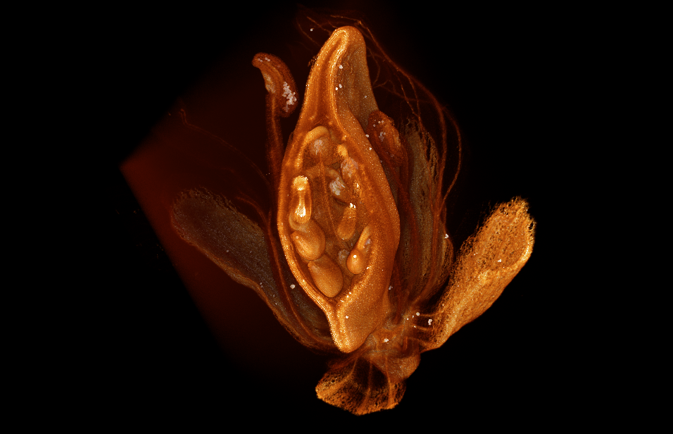

About me
I am a Research Scientist in root functional phenomics. Utilising phenotyping systems and image analysis is an exciting area to work in as it enables reproducible and high-throughput plant research.
Before moving to the US, my interest in this field took shape during my PhD project at the University of Nottingham. Under the supervision of Dr. Darren M Wells and Prof. Malcolm J Bennett, I used hydroponics and X-ray CT to phenotype root system architecture responses to nitrogen in wheat. I then worked in the lab of Dr. Larry M York as a postdoctoral fellow at the Noble Research Institute LLC on nutrient uptake kinetics.
My current position is at the Donald Danforth Plant Science Center under the direction of Dr. Christopher Topp. I am working on abiotic stress tolerance in pennycress.
The goal of my research program is to understand the mechanisms behind nutrient uptake and identify targets to facilitate breeding efforts for improved nutrient acquisition.
Nutrient uptake kinetics

A multiple ion-uptake phenotyping platform reveals shared mechanisms that affect nutrient uptake by maize roots Griffiths M, Roy S, Guo H, Seethepalli A, Huhman D, Ge Y, Sharp RE, Fritschi FB, York LM. Plant Physiology
X-ray CT rhizosphere

2020 Three Dimensional Root CT Segmentation using Multi-Resolution Encoder-Decoder Networks Soltaninejad M, Sturrock CJ, Griffiths M, Pridmore TP, Pound MP. IEEE Transactions on Image Processing
Seedling root system architecture
 Identification of nitrogen-dependent QTL and underlying genes for root system architecture in hexaploid wheat Griffiths M, Atkinson JA, Gardiner LJ, Swarup R, Pound MP, Wilson MH, Bennett MJ, Wells DM. Journal of Integrative Agriculture
Mesocosm root phenotyping & nutrient uptake
 Interactions among rooting traits for deep water and nitrogen uptake in upland and lowland ecotypes of switchgrass (Panicum virgatum L.) Griffiths M, Wang X, Dhakal K, Guo H, Seethepalli A, Kang Y, York LM. Journal of Experimental Botany
Root anatomy
BioTek Imaging competition 2020 award winner (1st place)
Xray Microscopy
 iPREFER project image competition 2022 winner (1st place Keith Duncan, Clara Lebow, Marcus Griffiths)